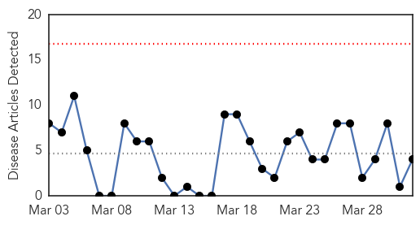
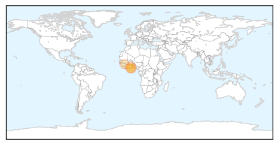

Cholera
30-Day Web Trend
0 alerts, 0 warnings

30-Day Twitter Trend
0 alerts, 0 warnings

Article Locations
Article Confidences
Top Articles:
Top Tweets:
- 0.664
- RT: The cholera outbreak moved to a 4th county in Kenya . MSF & the Kenyan authorities provide treatment & water tanks http:/…
Swine Flu
30-Day Web Trend
0 alerts, 0 warnings

30-Day Twitter Trend
0 alerts, 0 warnings

Article Locations

Article Confidences

Top Articles:
Top Tweets:
-
No tweets found for Apr 01, 2015